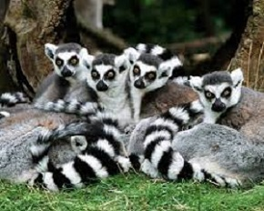

- У дельфінів є імена. Причому кожне дельфінча отримує своє ім’я при народженні. Цей факт довели вчені, записавши свист-сигнал, що означає ім’я, на яке відгукувався один і той самий дельфін.
- Рекорд зі стрибків належить кенгуру, найбільшому ссавцю Австралії. При наближенні небезпеки, кенгуру вдається до втечі стрибками, спираючись на хвіст як на жердину, і може стрибнути в довжину на 10–12 метрів, пролітаючи над гладдю степу на висоті близько двох метрів.

- Найбільше яйце, як відомо, у страуса. А найменше — у ківі. Страусине яйце має найменший відсоток ваги в порівнянні з його тілом, а от у ківі — якраз, навпаки. Деякі яйця ківі можуть важити до чверті ваги самого птаха.
- Уявляєте! У комарів є зуби. Під мікроскопом у них у роті видно 22 зуби.
- У японській кухні є страва «восьминіг-танцюрист». Нещодавно вбитого восьминога поміщають у чашку з рисом, а потім поливають соєвим соусом — і в цей час молюск починає «танцювати», перебираючи своїми щупальцями. Цей ефект пояснюється особливою будовою нервових волокон восьминогів, які навіть після смерті реагують на натрій який міститься в соусі і змушує м’язи скорочуватися.
- Щоб стати головним у зграї котячих лемурів, треба бути найбільш смердючим.
 - Деякі види пінгвінів можуть розвивати швидкість до 40 км/год. А ще пінгвіни вміють чудово пірнати і досить глибоко.
Якщо на поверхні води або неглибоко під водою птах не може знайти собі корм, тоді він здатен піти під воду на глибину до 20 метрів. А деякі види пінгвінів – навіть до 200.
Ось тобі ще кілька цікавих фактів.
- Слони сплять всього 2-3 години на добу.
Для гарного фізичного і емоційного стану людині потрібно в середньому 8 годин сну. ...- підпункт
- підпункт
- Слони змінюють зуби 6-7 разів ...
- Слони пам'ятають майже все ...
- Слони все чують ...
- Слони махають вухами від радості
Якщо стаття видалася вам цікавою, будь ласка, поділіться нею з друзями в соцмережах.